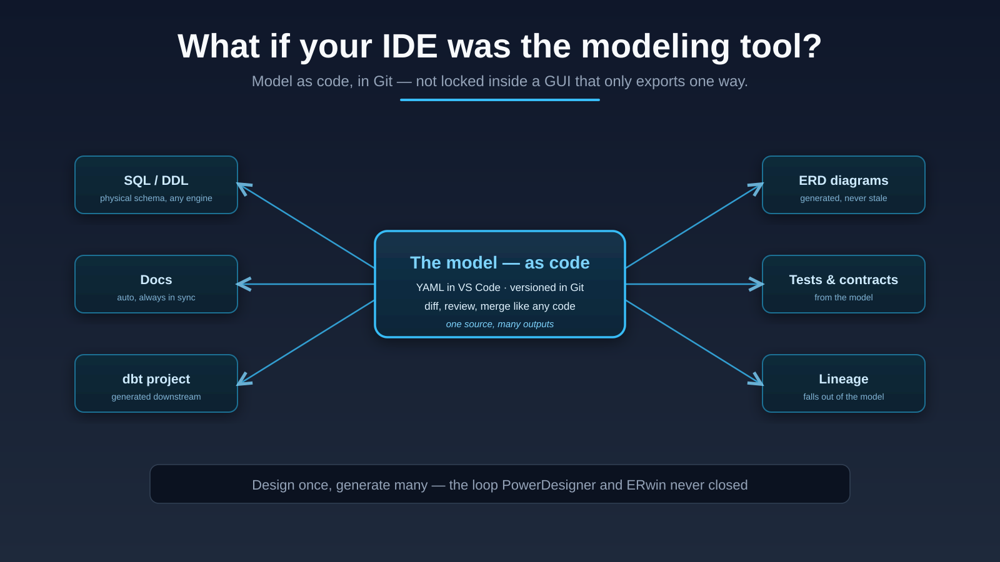

Expertise · Modeling tools
Traditional modeling tools export SQL once, and your edits to that SQL never flow back — a broken loop. I build the other way: the model lives as code in your IDE and Git, and SQL, diagrams, docs and dbt are generated from it. The loop closes.

The ideas behind it
What if VS Code was your modeling environment? Model as YAML, edit visually or as code, version in Git - and keep model and SQL in sync both ways. No more GUI-only tools where the SQL export is a dead end.
At de Volksbank I extended PowerDesigner with custom extensions until it drove model-based generation. The lesson stuck: a standard tool, extended with structure, beats adopting a whole new platform.
Merging models in PowerDesigner or ERwin is fragile GUI pain. Model-as-code makes a merge a normal Git merge - reviewable, diffable, continuous metadata integration instead of manual reconciliation.
A shared abstract core (the SQL and model AST) with thin per-engine adapters - Databricks, Snowflake, Fabric, Spark. Build the logic once; let each platform get its own optimized output.
From the writing
I build modeling tooling that fits how teams actually work — model as code, generate the rest.
Start a conversation